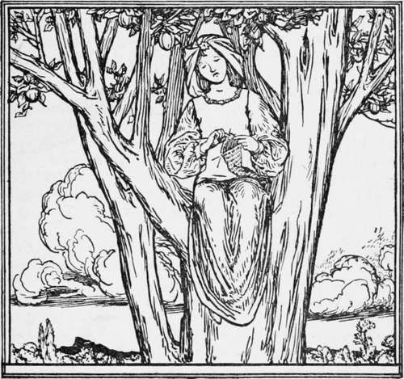
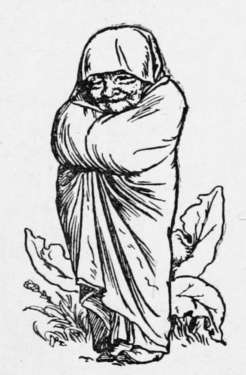

The Twelve Brothers. Continued
Description
This section is from the book "Household Tales by Brothers Grimm", by Brothers Grimm. Also available from Amazon: Household Tales by Brothers Grimm.
The Twelve Brothers. Continued
" I would gladly die," said his sister, " if by so doing I could restore my dear brothers to their home."
"No, no, you shall not die," cried Benjamin, "hide yourself under this tub, and when the others return, I will soon come to an understanding with them."
The sister did as she was bid, and as soon as it was dark, in came the brothers from hunting.
They sat dowm to their supper, and while eating and drinking, asked, " Well, Benjamin, what news have you to tell us ? "
"Have you yourselves heard nothing," said Benjamin. "Nothing," they replied.
"That is strange," continued Benjamin, "for you have been out all day, and I have only been in the house, and yet I know more than you."
" What is it ?" they all cried at once, " tell us what it is."
"Only on condition," said Benjamin, "that you promise me not to kill the first girl you see."
"We promise, we promise; she shall find mercy at our hands," they all cried again, "only let us hear your news."
Benjamin went to the tub, and, lifting it up, said, " Our sister is here," and the king's daughter stepped forth in her royal attire, with the gold star on her forehead, and stood before them full of tenderness, grace, and beauty. When the brothers saw her, they greatly loved her, and came about her and kissed her, and there was great rejoicing among them.
So now the sister stayed at home with Benjamin and helped him in the house, while the others continued to hunt in the wood for game. Among other things, she gathered the wood for cooking, and the herbs for vegetables, and put the pots and kettles on the fire, so that there might always be food ready for her brothers when they came in. She kept the house in beautiful order, and made the little beds look sweet and clean with pretty white covers, and altogether it was no wonder that the brothers were very happy and comfortable, and that they all lived together in great peace and contentment.
One day, the two who stayed at home had prepared a dainty meal, and as soon as they were all assembled they sat down to the table, happy and in good spirits. Now there was a little garden belonging to the house in which grew twelve tall lily plants. The sister went out to pick the lilies, for she thought it would please her brothers to give them each a flower as they sat at table. But scarcely was the last one gathered, when her brothers were suddenly changed into twelve ravens, that flew right away over the trees, and in the same moment both the house and garden entirely disappeared. There was the poor girl, left alone in the wild wood ; turning, however, to look around her, she saw an old woman standing near, who said, "My child, what is this that you have done? Why did you not leave those twelve white lilies untouched? Those were your brothers, who are now from this time forth, turned into ravens." The girl asked weeping, " Is there nothing that I can do to set them free?"
"Nothing," replied the old woman, "there is one way only in all the world by which they might be saved, but that would be far too hard a task for you to perform, for you would have to remain dumb for seven years, never either speaking or laughing, and if, when there were only a few minutes wanting to complete the seven years, you were to utter a single word, all your past endeavour would be in vain, and with that one word you would have killed your brothers."
The girl was silent, but in her heart she said. "I will set my dear brothers free; I know that I shall be able to do it."
Then she went and chose out a high tree, and there among its topmost branches she sat and span, and neither spoke nor laughed.
Now it happened, one day, that a king was out hunting in the wood. He had a large greyhound with him, and the dog ran up to the tree whereon the girl was sitting and began leaping about and looking up at her and barking. Then the king came along, and he too looked up and saw the beautiful princess with the gold star on her forehead, and he was so enchanted with her beauty that he called to her to ask if she would be his wife. She did not speak a word, but gave a little nod with her head. Then the king climbed up into the tree himself and carried her down, and lifting her on to his own horse, bore her away to his home.
The marriage was celebrated with great pomp, and amid great rejoicings, but the bride neither spoke nor laughed.
They had been living happily together for some years, when the king's mother, who was a bad-hearted woman, began to say wicked things about the young queen. "That woman you brought home with you," she said to the king, "is nothing but a common beggar-maid; who knows what evil tricks she may be up to in secret. Even if she is dumb and cannot speak, at least she must be able to laugh, and you know it is said that those who never laugh have a bad conscience." At first the king would not believe any of the things that were said against his wife; but the old mother gave him no peace, accusing the queen first of one wicked thing and then another, until he allowed himself at last to be persuaded of her guilt, and condemned her to death. But the king still dearly loved his wife, and he stood looking out of his window and weeping, while the fire was being kindled in the courtyard, where the young queen was to be burnt.
The queen had been tied to the stake; and now the last moment of the seven years came just as the angry tongues of the fire were beginning to play about her dress. Then there was heard in the air above a rushing sound as of wings, and twelve ravens came flying down, and no sooner had they alighted on the ground, than behold! there were her twelve brothers whom she had set free. They scattered the fire and trampled on the flames, and showered kisses and loving words upon their sister as they untied her from the stake.
And now that she might speak, she was able to tell the king why she had been dumb and had never laughed. And he was rejoiced when he heard her tale and knew that she was guiltless, and they all lived happily together for ever after.
But the wicked old mother-in-law was taken before the judge and tried, and he condemned her to be put in a vat of boiling oil, in which there were poisonous snakes, and so she died a miserable death.

Continue to:
- prev: The Twelve Brothers
- Table of Contents
- next: Briar Rose
Tags
fairy tales, children's stories, brothers grimm, household tales